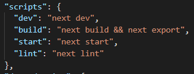
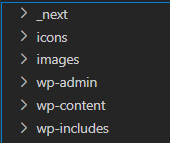
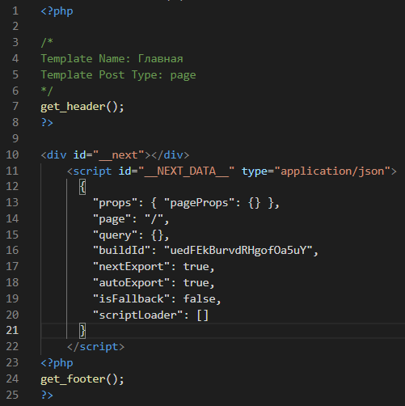
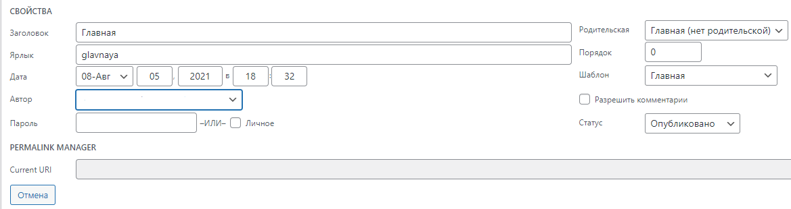

Перед тем как запустить сборку проекта перейдите в
package.json и в
scripts => build пропишите
"next build && next export".

После этого можете смело запускать скрипт сборки этой командой
.
Любым удобным способом клонируем этот шаблон пустой темы https://github.com/Automattic/_s.git в файл themes по этому пути "Название-проекта/wp-content/themes"
Потом открываем проект в любом редакторе и переходим к теме которую
загрузили. В файле header.php удаляем все что идет после
<?php wp_body_open(); ?>.
С footer.php проделываем тоже самое, удаляя все html теги оставляя
<?php wp_footer(); ?> и два закрывающих тега </body> и </html>
Переходим в файл с next js, заходим в out и копируем 3 файла (_next,
icons,images) и вставляем их в корень WP.

Теперь необходимо подключить стили и скрипты. Дабы не перетруждать
ваши пальцы и не прописывать все вручную, слева есть утилита,
которая сделает все за вас. Все что нужно вам будет сделать - это
открыть файл с next.js/.next/build-manifest.json => скопировать весь
json файла => вставить в textarea утилиты и нажать "Добавить". Ниже
появиться нужный код, который необходимо весь скопировать и вставить
в тег <head>, файла header.php.
Дальше нужно добавить все страницы которые есть в проекте: Копируем
с папки out все html файлы и перебрасываем их в корень темы. Потом,
проходимся по каждому html файлу и удаляем все кроме содержимого
<body></body> и подключаем хедер и футер. И обязательно нужно добавить
Template Name и Template Post, дабы чуть позже можно было добавить в
админ-панели эти шаблоны страницам. В итоге у вас должно получится,
что-то примерно такое:

И проделываем также для каждого html файла.
Но, файл index.html дополнительно нужно будет переименовать в front.php
После, переходим в админ панель => Все страницы и для каждой страницы добавляем нужный шаблон
